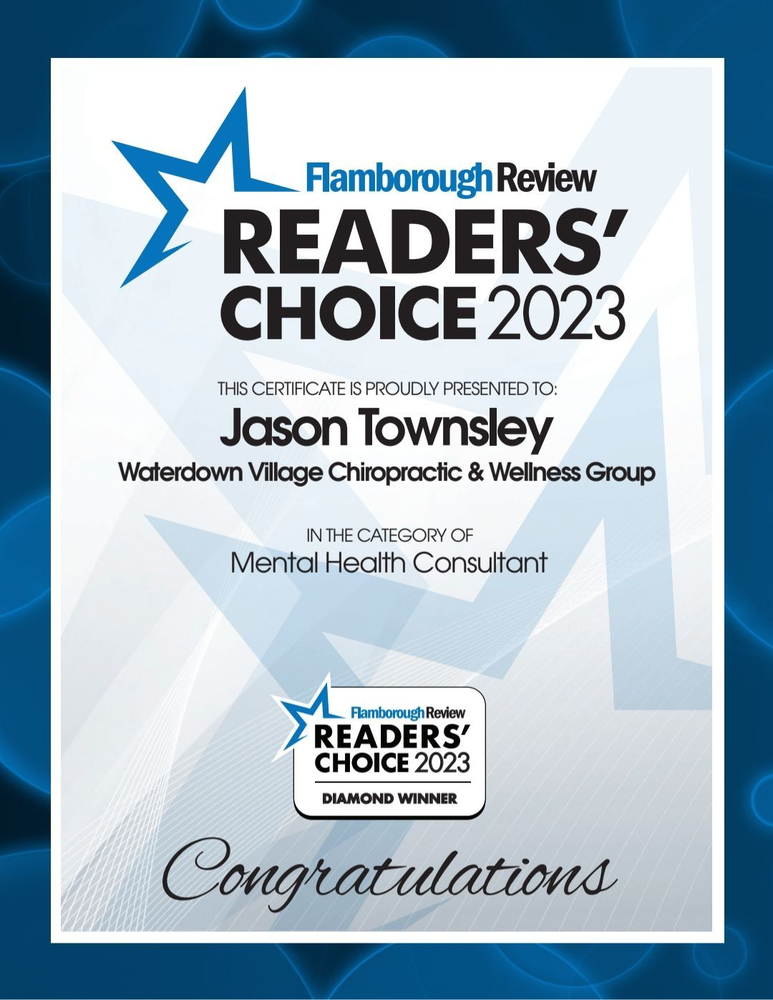

Registered Social Worker · Burlington & Ontario
Room to breathe,
and a way forward.
Therapy for youth and adults carrying anxiety, low mood, grief, or the weight of the past — with a therapist who listens first, then helps you change what’s no longer working.
A free, unhurried consult call — no pressure, no obligation.
Where I help
Whatever brought you here, you don’t have to carry it alone.
Anxiety, low mood & stress
For the worry that won’t switch off, the heaviness that lingers, and the burnout that’s quietly worn you down.
Trauma & attachment wounds
Gentle, evidence-informed work with trauma, grief, and the old wounds from childhood that still shape today.
Growth & change
When you’re ready to shift the patterns and mindsets that no longer serve you — and make it stick.
Relationships, OCD, BPD & more
Support with relationship challenges, substance use, OCD, and borderline personality disorder, for teens (13+) and adults.
“My job isn’t to fix you — you’re not broken. It’s to sit with you in the hard parts, and then help you move somewhere better.”
Jason TownsleyMSW, RSW · in practice since 2007
 384 Guelph Line
384 Guelph Line
The way I work
Safe enough to heal. Honest enough to grow.
Many clients tell me they were specifically looking for a male therapist — there are far fewer of us in this field, and for a teen, a partner, or anyone who’d feel more at ease talking with a man, that can matter.
The safety to heal
Trauma and attachment wounds need patience. We go at a pace your nervous system can trust — never rushed.
The honesty to change
When you’re ready, I’ll gently challenge what’s keeping you stuck. Insight is the start; living differently is the goal.
How it begins
Getting started is simple
No forms to wrestle with before you’ve even said hello. It begins with a conversation.
Reach out
Book a free meet & greet, or send a short message about what’s on your mind. No commitment yet.
See if we fit
We talk briefly — you get a feel for how I work, and we make sure I’m the right person to help.
Begin, your pace
When it feels right, we book an intake and start — in person in Burlington or by secure video.

Recognized locally
Trusted by the community
Named a Flamborough Review Readers’ Choice 2023 Diamond Winner in the Mental Health Consultant category — a reflection of the care clients across Burlington, Waterdown, and Hamilton have come to know.
Let’s start with a conversation
A free meet & greet is the easiest first step — unhurried, honest, and entirely without pressure.
Book your free consult call